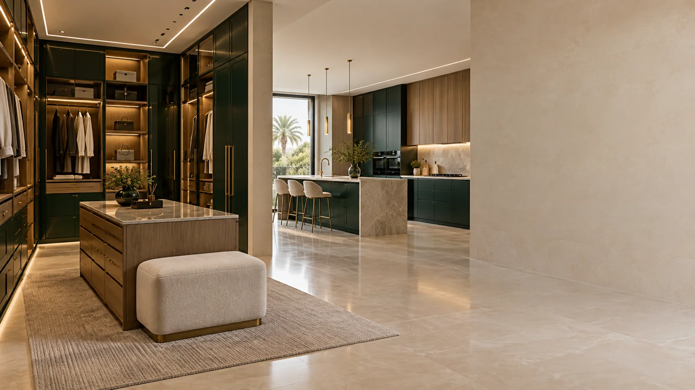

01 / مطابخ متكاملة
مطابخ متكاملة
تكوين يوازن بين الحركة والتخزين ومواقع الأجهزة، مع واجهات وخامات تمنح المطبخ حضورًا هادئًا ومتماسكًا.
- تخطيط
- واجهات
- تخزين

قسّم احتياجك حسب نوع المساحة، ثم انتقل من الوصف العام إلى صور وقياسات تساعد على مناقشة التفاصيل بوضوح.
المحتوى التالي ينظم نطاق النشاط المعلن ويعرض طريقة أوضح لفهم كل فئة قبل التواصل.
تكوين يوازن بين الحركة والتخزين ومواقع الأجهزة، مع واجهات وخامات تمنح المطبخ حضورًا هادئًا ومتماسكًا.
تقسيمات داخلية تُبنى حول الاستخدام اليومي؛ تعليق وطي وأدراج وإضاءة في نظام واضح وسهل الوصول.
ربط الخامات والألوان والتفاصيل بين المطبخ والخزائن وبقية المشهد الداخلي لتظهر المساحة كوحدة واحدة.
كلما كانت البداية واضحة، كان من الأسهل فهم المساحة والاتجاه المطلوب.
صور كاملة للجدار والزوايا ومواقع النوافذ والأبواب.
العرض والارتفاع والعمق المتاح، حتى لو كانت قياسات أولية.
نموذج قريب من اللون أو الخامة أو أسلوب التخزين الذي تفضله.
شارك صور المساحة والمقاسات التقريبية عبر واتساب الرسمي، وحدد هل المطلوب مطبخ أو خزائن أو تصور داخلي متكامل.